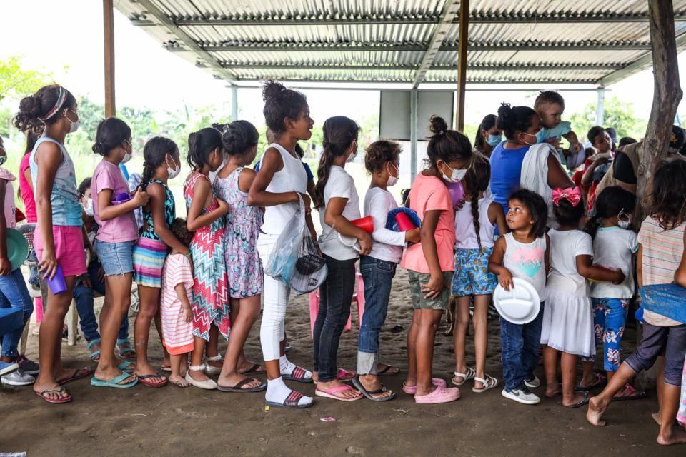
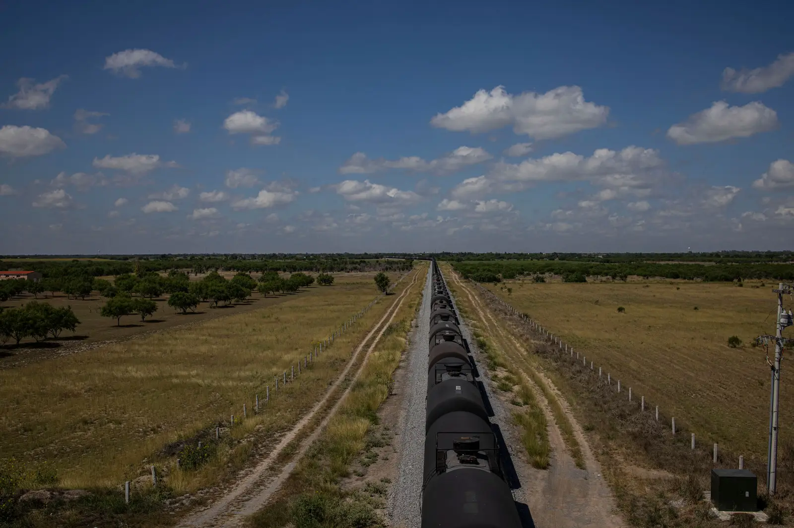

To be a migrant is to have your life and your story politicized. Fleeing violence or natural disasters,
seeking economic opportunities, or moving for a new job in a foreign country becomes a political act
rather
than a personal one. Over the past decade the number of migrants from Central America to the United States
has been steadily increasing and unfortunately, prejudice against migrants and fears over “caravans” of
migrants have been increasing alongside. But who are the migrants? What are their stories?
Our data comes from a
World Food Bank survey
of around
5000 households in Guatemala, Honduras, and El Salvador.
These 5000 households were asked about their income level, willingness to migrate, and migration plans.
Let’s start by diving into the level of financial comfort of the households surveyed.
This survey question provides a general picture of the income brackets of our respondents. Let's focus in on those who answered "we are in a very critical situation with our current income."

Here we can see that a minority of the respondents claimed to have experienced no violence or crime at all.
It is even possible that those who responded "Diminished" are still experiencing violence frequently.
Especially in the case of households with children, this experience may play a
significant role in decision to migrate.
The number of families seeking to migrate may make sense given the story that is always told of migrants
fleeing a lack of economic opportunity, though the reality is often that many people at this level of
instability cannot afford migration.
For those who have attempted to migrate themselves or have family members who have, the average cost in USD was around $6000.
Here we can see that a lower proportion of households are currently planning to migrate than those who would
would like to.
This could be due to a range of reasons, but given the high cost of migration and the financial
vulnerability of this subset, it's very likely that financial constraints play a
role.
Of the families who want to migrate but are not planning on migrating, there are a variety of stated reasons, the most common being not having enough money to pay for the transfer or to pay for housing in another country.
Here we can get a sense of how lower income households fare, understand why someone may want to migrate, and learn why they may not be able to. We can understand these stories as more than dots or more than political controversy in the US. Every dot here is a household with a story and life and we hope to shed a little light on that story.
